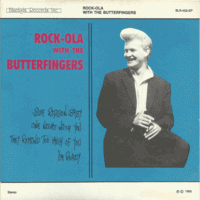

Rock-Ola With The Butterfingers - Rock-Ola With The Butterfingers (EP, 1985)
01 - Blue Ribbon Baby (2:15)
02 - One Night With You (2:18)
03 - They Remind Me Too Much Of You (2:58)
04 - I'm Ready (2:06)
© Bluelight Records :: [BLR-452-EP]
Notes
Finland.
Rock-Ola (Olli Pihlajamaa) - Vocals
Alpo Hakala - Guitars, Backing vocals
Petteri Salmi - Guitars
Pekka Vanninen - Bass
Tomi Tuomi - Drums
Ismo Halkola - Piano
Recorded and remixed at Studio Kotka Ky
Engineered, produced by Jukka-Pekka Kairaneva
reference information: Discogs®
Review
295/366 (Project 366)
Fin-A-Billy treasure. I have already tried to review Rock-Ola recordings with another backing band and also the Butterfingers itself. They are so interesting and good that it is a great opportunity to consider their joint work. Four songs, but so many emotions, tones and impressions! Each track is about unique sound, mood and tune. Together - chic! Covers, but really in a special way sounding. Poppy rockin' and rollin', love and tender song, kind of country and authentic rockabilly. Mostly with fresh look and spices.